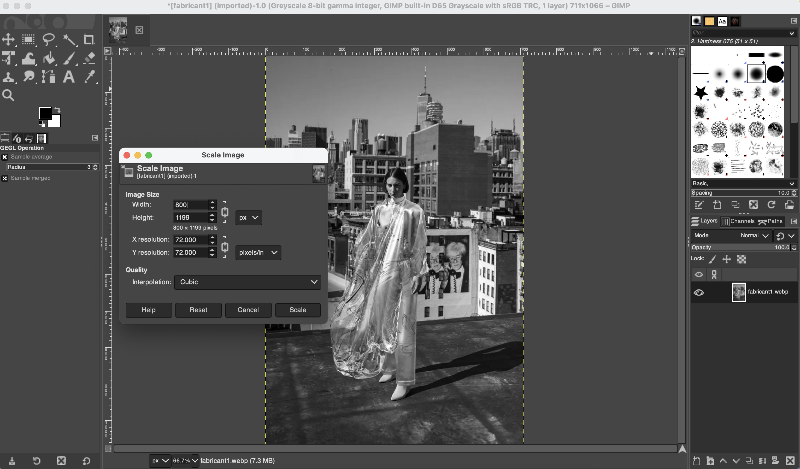
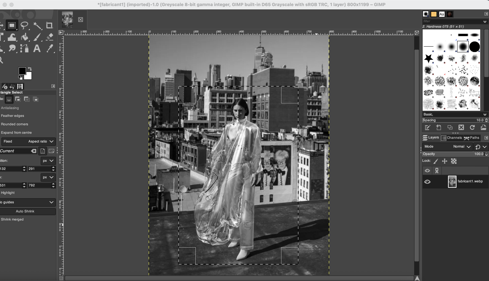
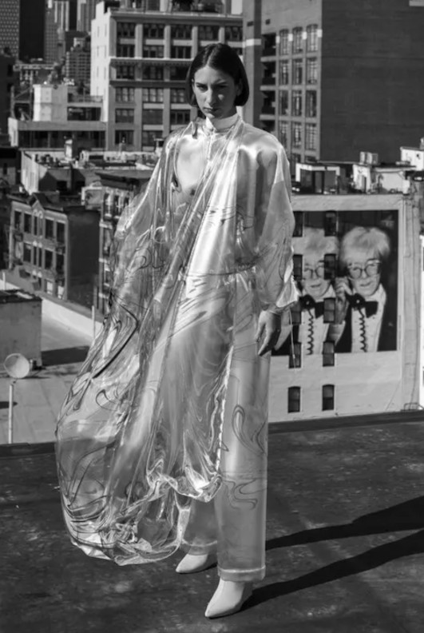

What is a digital image? How can images be used?
A digital image as data refers to a binary representation of visual data. Information including file type, dimensions, and camera (exposure etc). Alternatively, images as data highlight how visuals can take the form of photographs, graphics, and individual video frames. For this purpose, an image is a picture that was created or copied and stored in electronic form.
A digital image as information refers to their ability evoke thoughts, provide indicators about the context of culture, and enhance the human experience. Images aid the neurological functions of the human brain and enable emotional learning to occur in shaping attitudes, thinking, and behaviour.
The purpose of images for my site ‘In Vogue: Digital fashion’ would be to use visuals of digital and physical clothing to establish how digitisation has developed realism to encourage use. To stand out within the online fashion market, it is important to consider search engine ranking for clients and for the visibility of digital products within a physical fashion market, this is one example of how image search could create traffic to this website.
Evaluating Image Types
Create Your Own (some of site media)
(a) Site Logo - I have created inverted two logos in black and white, this should fit contrasting page themes. Establish the site, as a take on ‘vogue’ a notorious magazine and fashion journal giant. But change the mission, this image is my take on making sustainability trendy.
(b) Infographics – digital fashion manufacturing stages, a timeline of fashion archives (preservation), fast fashion lifecycle. [find on inforgraphics page]
Digitised Physical Materials (Less likely to be used)
(a) Sustainability of the manufacturing and promotion of physical vs digital clothing
(b) Images of environment destruction laid out as a horizontal gallery behind a physical piece could be an effective tool, the literal consequences behind the physical product. Contrastingly, positive environmental impacts could be used for the digital product.
Search Image Databases/Stock Photography Resources (majority of site media)
- From digital fashion sites analysed: The Fabricant, Republique, DressX etc. As well as digital fashion designers: Yayoi Kusama (featured background image on the homepage) etc.
- Digitised fashion shows: Louis Vuitton Paris Fashion Week 2020 etc.
- Designers with gaming skins and metaverse collections: Roblox X Gucci.
- Cited accordingly
Images and Creativity: Site Comparison
Creativity involved in creating image layout can be used to evaluate aesthetics and purpose of images:
In weeks 1-3 site layout research purely focused on the incorporation of traditional fashion retailers JADED, ZARA (and ASOS). By analysing desired features from previously researched sites, I will evaluate the effectiveness of physical fashion market leaders and new digital fashion retailers DressX and The Fabricant.


Online retailers focus on images used for advertising and aesthetics. Across all four websites the key message is to promote products. This is emphasised using background images formatted full screen. I aim to replicate this layout by featuring pieces concerned with sustainability. The Fabricant and Zara utilise minimalism following muted colour schemes and centralising products on a large scale. Jaded utilises background image from a maximalist approach overlaying clashing colours – this is something to avoid when editing. Although the image uses a larger quantity of products at contrasting positions it overcomplicates the effective background image. DressX follows a similar approach with clashing tones but crops the background image to limit a section of text. This is an effective technique as it provides structure within a maximalist layout.

Images are used with intent. The Fabricant utilises pop up images use text to initiate engagement with images. After absorbing information this means users can visualise what they have read, making information less cluttered and introducing ideas one at a time increasing user comprehension. Zara also focuses on distinct parts of products using zoom in features on images. Proving the quality of products by being thorough in image quality and variety of scale. Overall, both Raster and Vector images have been used. But for these image features I would consider using Vector images. Raster images lose image quality when resized. Whereas, with vector image files, resolution is not an issue. You can resize, rescale, and reshape vectors infinitely without losing any image quality.
Editing Images
Image optimisation tasks, incorporating the master image, derivative images and analysis.
The following image will be featured on the final site to demonstrate digital fashion is impacting the creative economy. This image features the world’s first blockchain only clothing item sold for 9,500 U$D. ‘Iridescence’, is Fabricant’s (a digital fashion house) breakthrough collaboration with artist Johanna Jaskowska, creator of Instagram filter Beauty 3,000 an AR fashion feature. As a blockchain digital asset, the rare garment is both clothing and crypto currency. This highlights the relevance of NFTs to utilising fashion economically and socially online. ‘Iridescence’ should be used as a visual tool to understand the initial introduction of fully digitised transactions of 2019.
Step One: Selecting an image. This is the original format of the image before editing using GIMP software. Image contents will be used on the final site as a reference fully digitised transactions being new. (actual file dimensions are 711 × 1066)
Shared by Brookes Roberts-Islam, Forbes at forbes.com.
Step Two: Employing greyscale and changing image resolution to increase clarity.
Step Three: cropping unecessary content to reduce file size and changing the file type from .xcf to .jpeg
Step Four: Final image. By changing the file name to 'image001-mada-fabricant-blockchain-800px-72ppi-greyscale-0-1' this makes the file informative of origins and its purpose.
Images and Site Reflection
User experience (UX) focuses on having a deep understanding of users, what they need, what they value, their abilities, and their limitations. Clothing should be represented not only aesthetically as art or product advertisement but also concentrate on the immersive nature of digital fashion within games and social media. Specifically, what visually makes digital fashion a valid alternative to fast fashion and following trends.
To ensure high quality images it is important to consider format basics. Image compression can be used to reduce redundancy of the image data to be able to store or transmit data in an efficient form. Lossy compression reduces file size by permanently removing some of the original data. Lossless reduces file size by removing unnecessary metadata. As users are unlikely to stay on website that takes too long to load inefficiency means platforms take preventative measures. Selecting appropriate file types, layout and compression of images stops web competitive consequences such as googles penalisation of websites that take too long to load.
Raster images will be used to form highly detailed images. Raster files are images built from pixels; a higher quantity of pixels means a higher quality image. As the quantity of image pixels are dependent on the file type the site will primarily contain JPEG (lossy) and PNG (lossless) files. Contrastingly, vector images will be used to capture shape, border, and fill colour to build an image. Vector files use mathematical equations, fixed points along lines or curves on a grid which form an image. This formula recalibrates to any size, by scaling a vector image up or down without impacting its quality this means images can be altered to suit the desired layout of the webpage.
The final site should reflect the physical appearance of a digital and physical clothing retailer. When considering multimedia tools, the site will primarily rely on images to increase emotional engagement of readers and convey an effective message about sustainable digital habits to readers. Images should involve recognisable trends such as streetwear and editorial shoots (relative to the idea of being ‘in vogue’).